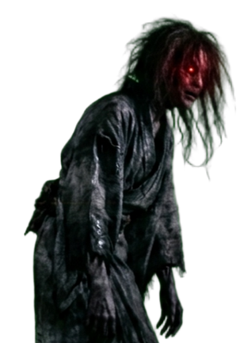
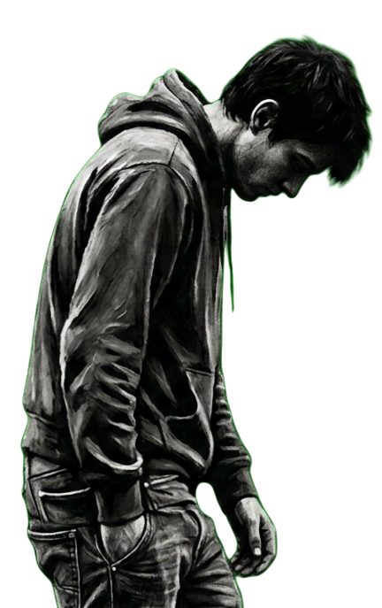

← 返回
怪物图鉴
BESTIARY
怪物类型
追
追击者
CHASER
一旦生成便会追击玩家，但只会追逐几秒，随后自行消失。保持距离，等它离去。
⚠
跑就完了
静
静止者
STALKER
一旦生成便会追击玩家，接触时只要站立不动，就不会被伤害。保持冷静，切勿移动。
★
接触时站立不动即可安全通过
潜
潜伏者
LURKER
平时看似静止无害，一旦受到惊扰便会进入狂暴状态，展开追击。
⚠
勿惊扰，否则无法摆脱
地图怪物
学校
SCHOOL

追击者
过载
CHASER
它曾经也是坐在教室里的普通一员，直到某一个熬夜学习的深夜，最后一根紧绷的神经彻底断裂。

静止者
答题机器
STALKER
两眼无神，笔尖不停。他们还活着，但早就死了。
潜伏者
试卷木乃伊
LURKER
你是活生生的人，还是由分数拼凑起来的标本？
🔒
通关学校地图后，怪物图像将完整显示